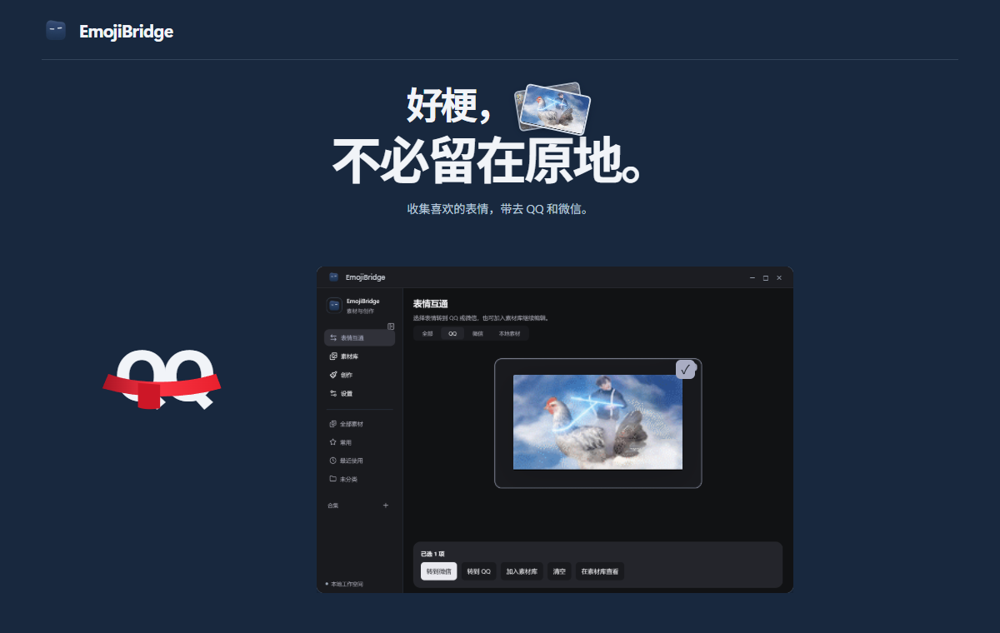
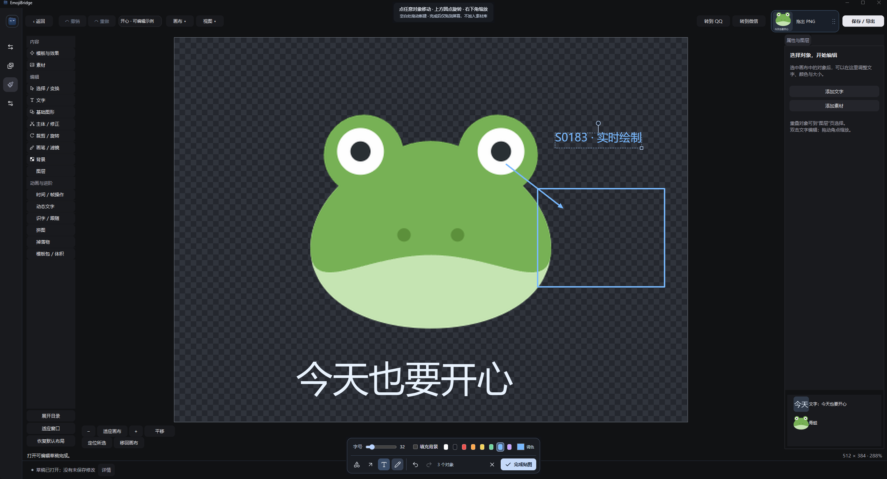
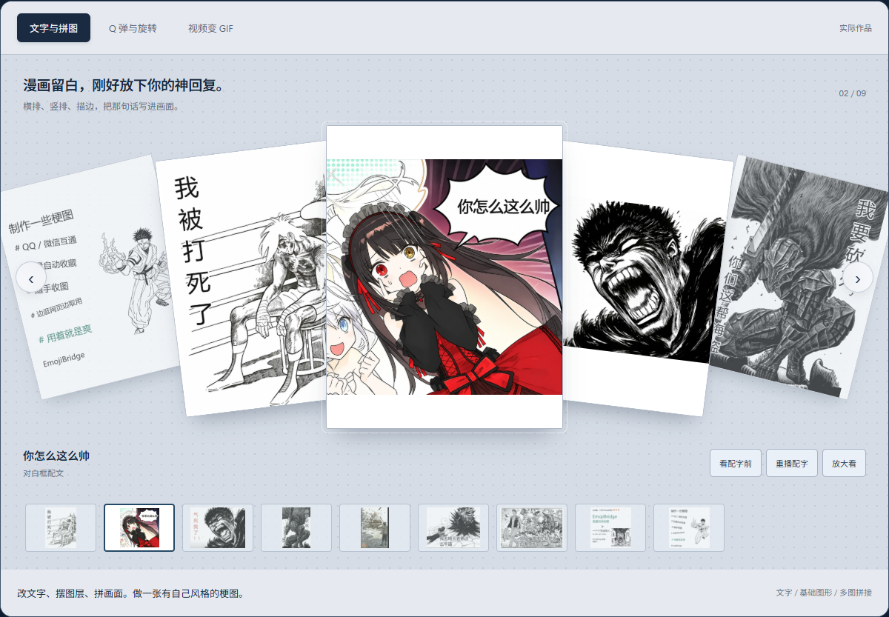
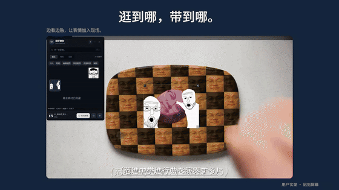
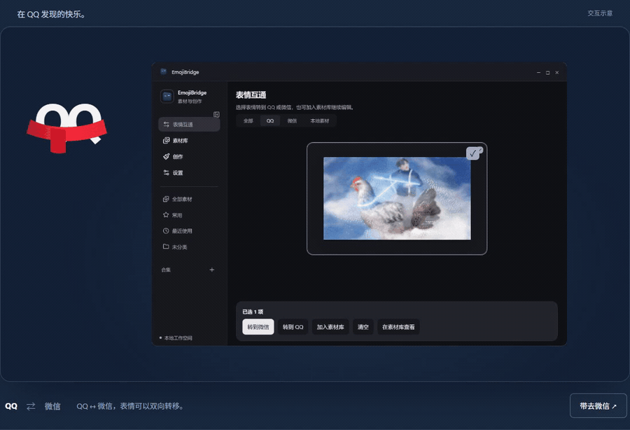

EmojiBridge
收集表情，创作 GIF，把灵感贴到桌面。
一款免费的 Windows 桌面素材与 Meme 创作工具：收集整理、视频转 GIF、图文编辑、随手素材、桌面贴图与实时绘制。QQ / 微信互通作为附加能力保留。
选择下载 · 功能详览 · 完整宣传片 · 同款表情包 · 使用条件
☆ Star 支持项目 · Created by Neo
在桌面上，直接画出来
从随手素材拖出图片或 GIF，贴到屏幕上。开启实时绘制，画圈、拉箭头、输入文字；已有对象可以重新选中、移动、旋转和缩放。绘制期间桌面与 GIF 继续动态播放，完成后得到临时贴图，想收藏时再手动加入素材库。

漫画配文与图文创作
漫画加一句神回复，多张图片拼出一个新梗。文字、基础图形、静态图与 GIF 可以一起组成画面；也可以套用模板、复用排版。

打开交互画廊：七组漫画配文，加上标签图与论战图。同一展示区也能切换到“评论区收集”，查看从抖音评论区拖入随手素材的过程。选择作品，查看配字前后，或展开大图读清每一句。
想知道具体能做什么？功能详览按收集、裁剪 GIF、抠主体、拼图、文字图形与模板、趣味动效、随手素材、导出互通八个方向展开，每组都有对应演示片段。
让表情更有戏：Q 弹、旋转、掉落物与传送
 调整动效参数，再导出自己的版本。视频可以选取片段、裁剪画面，转成聊天里能循环播放的 GIF。做好了，顺手拖出去
从成品拖出区，把刚做好的图片或 GIF 拖到支持接收文件的聊天窗口或文件夹，减少保存后再翻找的步骤。体验拖出示意。
经验瓶在处理完成后收起经验球，末影人陪表情走过搬运舞台。两套软件同款动效，也可以在宣传页亲手播放。
逛到哪，带到哪
随手素材浮在网页上方。喜欢的收进来，想用的拖出去；也可以贴在屏幕上，继续拖动、缩放。它是独立置顶窗口，不改变网页内容。

做好后，从成品拖出区域拖到支持接收文件的窗口，或加入 QQ / 微信收藏。
需要时，再带到 QQ 和微信
选中一组表情，交给 EmojiBridge 转移。QQ 和微信可以双向互通；素材库里的图片、GIF，以及编辑完成的作品，也能加入收藏。

这是功能流程的视觉示意。自动操作客户端时需要本机登录，并保持窗口可操作；QQ 本人缓存读取可在 QQ 关闭时进行；微信通过本人的文件传输助手发送并添加表情，会占用文件传输助手的聊天上下文并产生消息记录；QQ通过本地导入收藏。支持范围见兼容说明。
下载与开始使用
S0183 · 三版任选一个 → 全部解压 → 双击 EB/EmojiBridge.exe。无需安装 Python。
| 下载 | 怎么选 |
|---|---|
| 轻量版 ZIP · 523.40 MB（推荐） | 自带默认自动抠图、基础编辑、视频/GIF、OCR 与互通组件；更多模型和模板按需选装 |
| 带模板版 ZIP · 859.56 MB | 包含轻量版全部功能与表情工厂模板，无需另装模板包 |
| 完整离线版 ZIP · 1.35 GB | 包含带模板版全部内容，再含动漫/精细抠图和 tiny 字幕 |
| 公开源码 · 114.80 MB · SHA256 校验 | 开发者或需要核验下载内容的用户 |
| 宣传片同款素材 · 707 MB | 独立可选，解压后多选导入，不随软件自动初始化 |
三版都自带默认 自动／U²-Net 模型，默认抠主体无需下载。轻量版可通过“设置 → 可选组件”添加模型与模板；已有 S0174 组件可继续使用。缺少系统 WebView2 时，按启动提示安装微软官方组件。
S0175 用户需手动安装 S0183 一次，之后才能使用内置更新。 保存作品并退出旧程序，完整解压到较短的新目录（例如 D:/EmojiBridge），运行 EB/EmojiBridge.exe；保留旧目录与个人素材、账号和草稿。不要混合覆盖或叠加旧补丁。使用自定义 --data-dir 的用户继续使用原数据目录参数。
新版启动只检查官方稳定版信息；点击更新后才下载同类型完整 ZIP，并核对大小、SHA256 和文件清单，正常保存退出后替换程序、重启确认，失败时尝试回退。它不是差分更新；上传源码本身不会触发更新，需要发布配套软件包和更新清单。兼容的已安装组件会保留。
S0183 汇总 S0176–S0183 的改进：素材库批量选择、文件夹导入与父子合集、相似图人工整理、备份恢复；随手素材复制与桌面贴图；实时桌面绘制中的形状、箭头、文字与画笔，可选回对象移动、旋转、缩放。完成绘制后生成临时贴图，不自动入库。QQ 来源按“更新”读取本人缓存，读取和复制不再自动加入素材库。
第一次使用，从哪里开始？
先把几张自己的图片拖入素材库，试试编辑、保存和拖出。使用互通前，登录自己的 QQ、微信，按界面引导连接账号。QQ 可直接读取本人的缓存目录，点击“更新”后刷新；自动操作客户端进行互通时，请勿遮挡、点击或切换目标窗口。使用前的小提醒
- 转入微信会使用文件传输助手，占用其聊天上下文并产生相应消息记录。
- 自动操作客户端进行互通时，请勿遮挡、点击或切换目标窗口，等待任务完成后再操作。
支持 EmojiBridge
如果它帮你把好梗带到了想去的地方，欢迎 点个 Star，支持 Neo 继续打磨。也欢迎带着具体使用场景来提建议。
作者与许可
Created by Neo。项目自有源码采用 GPL-3.0-only；第三方代码及素材保留各自许可与来源，表情包、音乐、漫画等不自动适用源码许可。
EmojiBridge 由 Neo 创建与维护。 项目名称与专用 Logo 用于标识原项目，品牌权益与源码许可分别说明；衍生版应与官方发行版清楚区分。详见作者、品牌与衍生项目署名说明。
从源码运行与构建
Windows x64、带 Tk 的 Python 3.12 与 Microsoft WebView2。桌面入口还需要 runtime/desktop 中的桌面依赖；完整构建的组件准备与固定校验值见 BUILDING.md。公开源码与本版完整包对应，产品提交记录在 SOURCE_BUILD.json。